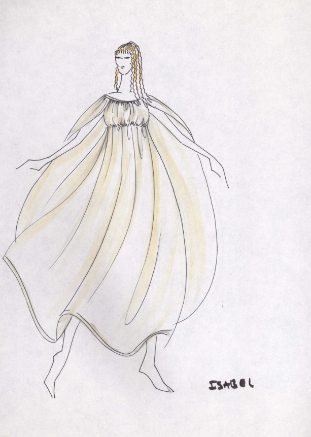

Italian Cinema and Cultural Heritage: Costumes as Cultural Artifacts
About the Project
This project explores how theatrical costumes can be understood as part of Italy’s cultural heritage using the ArCo knowledge graph and Large Language Models.
Methodology
This project explores how theatrical costumes function as cultural heritage objects, using structured data from the ArCo Knowledge Graph and insights from large language models (LLMs). Our goal was to combine semantic technologies, human interpretation, and visual presentation to enrich and represent costume artifacts from Italian cinema and theatre.
Each team member selected a specific costume or costume sketch and followed a shared methodology consisting of five main steps:
1. Object Selection via SPARQL
- Used the SPARQL endpoint of the ArCo Knowledge Graph
- Searched for cultural heritage objects using keywords
- Identified objects cataloged as Historic or Artistic Properties related to Italian theatre or cinema
2. Object-Specific Analysis
Each participant selected one object and retrieved its metadata:
- Anna: Regina Isabella Costume Enrichment
- Mariam: Theatrical Costume 1963 by Dario Fo
- Arina: Arlecchino '600 sketch by Dario Fo
- Anastasia: Theatrical Costume “La Fama”
- Daniil: "Second Accuser" by Dario Fo
Each participant noted what metadata was available (e.g., material, author) and what was missing (e.g., symbolic meaning, historical context).
3. Contextual Enrichment with LLMs
To bridge the gap between technical metadata and cultural meaning, participants used different language models: ChatGPT, Gemini, and DeepSeek-V3.
4. RDF Triple Generation
Using the ArCo ontology and newly enriched information, each member generated RDF triples describing material, technique, symbolism, or cultural references. These were saved in .ttl files and uploaded to GitHub.
5. HTML Publication and GitHub Integration
Each participant documented their contribution on a separate HTML page hosted via GitHub Pages. Each page includes:
- A summary of the selected object
- SPARQL queries and results
- Prompts and LLM answers
- RDF triples
- A downloadable TTL file
- An image of the costume
From the homepage, each name links to a dedicated page with this structured content.
This methodology combines SPARQL-based data retrieval, AI-supported semantic enrichment, RDF modeling, and web publishing to build meaningful digital representations of theatrical costumes. The result is a project that merges cultural heritage and technology to bring Italy’s performance history into the linked data space.
Anna – Regina Isabella Costume Analysis
Topic
My contribution focused on analyzing the theatrical costume “Regina Isabella”, created in 1992 by Dario Fo and Miguel Carbonell. This costume is cataloged in the ArCo Knowledge Graph as a Historic or Artistic Property.
SPARQL Analysis
Using SPARQL, I explored the ArCo endpoint and retrieved the properties of the object 0500704575. I found that the object already includes metadata such as title, authorship, and description. However, it lacked symbolic, material, and contextual information.
LLM Prompting Techniques
1. Zero-shot Prompt
Prompt: What does the theatrical costume “Regina Isabella” represent in terms of cultural or symbolic meaning?
Answer: It represents royal authority, feminine power, and Renaissance nobility, reflecting the image of a queen from the 16th century.
2. Few-shot Prompt
Prompt:
Example 1: Napoleon Bonaparte — Symbolizes power and nationalism.
Example 2: Cleopatra — Represents feminine authority and exoticism.
Now describe “Regina Isabella”.
Answer: Regina Isabella symbolizes dignity, regal presence, and traditional Italian theatrical depictions of female power and historical prestige.
3. Chain-of-thought Prompt
Prompt:
- What historical context does the name “Regina Isabella” refer to?
- What do the materials — red velvet and gold embroidery — traditionally symbolize?
- How are queens typically portrayed in Italian theater and cultural heritage?
Based on this reasoning, what does the costume most likely represent?
Answer: The name refers to a Renaissance queen, evoking images of female monarchy and historical authority. Red velvet and gold embroidery symbolize luxury, power, and theatrical grandeur. Queens in Italian culture are often portrayed as dignified, commanding, and elegant. Therefore, the costume most likely represents royal status, feminine strength, and the cultural ideal of noble womanhood on stage.
Enrichment
Based on the new insights, I created RDF triples to enrich the knowledge graph, adding material, technique, and symbolic subject:
@prefix arco: <https://w3id.org/arco/ontology/arco/> .
@prefix a-cd: <https://w3id.org/arco/ontology/context-description/> .
@prefix ex: <http://example.org/> .
@prefix rdfs: <http://www.w3.org/2000/01/rdf-schema#> .
<https://w3id.org/arco/resource/HistoricOrArtisticProperty/0500704575>
arco:material "red velvet" ;
arco:technique "gold embroidery" ;
a-cd:hasSubject ex:QueenAuthority .
ex:QueenAuthority
a a-cd:Subject ;
rdfs:label "Symbol of royal authority and female power" .
File
My enrichment file is available here: regina-isabella.ttl
Mariam - Costume by Dario Fo (1963)
Topic
My contribution is focused on analyzing the theatrical costume created in 1963 by Dario Fo.

SELECT DISTINCT ?cp
WHERE {
?cp a arco:HistoricOrArtisticProperty ;
rdfs:label ?l .
FILTER(REGEX(?l, "vestito|teatro|cinema|costume|disegno", "i"))
}
LIMIT 50
SPARQL Analysis
Using SPARQL, I queried the ArCo endpoint to explore the metadata for object 0500704524 The retrieved information includes:
- Title: Costume teatrale
- Author: Dario Fo
- Materials: Fabric, wood, metal
- Techniques: Sewing, wood carving, metalworking
- Color: Red, gold, black
However, ArCo lacks contextual and semantic enrichment that could connect this object to broader cultural knowledge. Specifically, the following key aspects are missing:
- 🎬 Which theatrical performance or film was this costume used in?
- 👗 What historical period or clothing style does it represent?
SELECT DISTINCT ?property ?value
WHERE {
?property ?value .
}
To address these gaps, I used Large Language Models (LLMs) to infer missing connections and generate RDF triples that enrich the knowledge graph with contextual and stylistic information.
LLM Prompts and Answers
I used ChatGPT, Gemini, and LlaMa 2 Family to analyze this costume. All three models agreed that the costume was designed for the play Isabella, tre caravelle e un cacciaballe and reflected a stylized version of late 15th to early 16th-century Spanish court fashion.
| LLM model | Question 1: Which theater production or film featured a costume based on "figurini per costumi di scena, femminili (disegno)" by Dario Fo, created in 1963? |
Question 2: What historical clothing style is represented by the costume? |
Result |
|---|---|---|---|
| ChatGPT | 4 different outputs, no clear conclusion | very good | Good, but not specific |
| LLaMa 2 | Unstable, broken chain of thought | Not enough data | ❌ Weaker |
| Gemini | Clear and confident: "Isabella" | Detailed, stylish, theatrical | ✅ Best result |
The best question-answer experience with Gemini:
🟠 Where the costume was used 🟠
🔶 Zero-shot prompt: Which theater production or film featured a costume based on "figurini per costumi di scena, femminili (disegno)" by Dario Fo, created in 1963?
Answer: The costume based on "figurini per costumi di scena, femminili (disegno)" by Dario Fo, created in 1963, was designed for his play "Isabella, tre caravelle e un cacciaballe" (Isabella, Three Sailing Ships and a Con Man). This comedy, written by Dario Fo and Franca Rame, premiered in 1963. The costumes for this production were inspired by the 16th century setting of the play. The drawings, including the "figurini per costumi di scena, femminili (disegno)," were used for the costume department and actors during the creation of the theatrical pieces. The play "Isabella, tre caravelle e un cacciaballe" was later adapted for television by RAI TV in 1977 as part of the series "Il teatro di Dario Fo."
🔶 Few-shot prompt: Example:Design: "Historical armor costume sketch by Danilo Donati (1970)" Q: In which film was this used? A: It was used in the film "Fellini Satyricon" (1969). Now: Design: "figurini per costumi di scena, femminili (disegno)" by Dario Fo (1963) Q: In which theatre performance or film was the costume used? A:
Answer: A: The costume was used in the theatre performance "Isabella, tre caravelle e un cacciaballe" (Isabella, Three Sailing Ships and a Con Man), written by Dario Fo and Franca Rame, which premiered in 1963.
🔶 Chain-of-thought prompt: Let's examine the origin of the costume. It is based on "figurini per costumi di scena, femminili (disegno)" by Dario Fo, created in 1963. Dario Fo was an influential Italian playwright and costume designer. Considering the year and his theatrical work, what performance might have featured this costume? Could it have been used in one of his satirical plays or a specific production from that period?
Answer: You are absolutely on the right track! Dario Fo was indeed a master of satirical theater, and his costume designs were an integral part of his productions. The costume based on "figurini per costumi di scena, femminili (disegno)" by Dario Fo, created in 1963, was almost certainly used in his satirical play "Isabella, tre caravelle e un cacciaballe" (Isabella, Three Sailing Ships and a Con Man). Here's why this is the most likely origin: Year of Creation: The design is from 1963, and "Isabella, tre caravelle e un cacciaballe" premiered in that very year. This direct correlation in timing makes it highly probable. Dario Fo's Style: Fo was renowned for his political and social satire, often using historical events and figures to comment on contemporary issues. "Isabella, tre caravelle e un cacciaballe" is a prime example of this, offering a comedic and critical look at the "discovery" of America by Christopher Columbus and the role of Queen Isabella. His costumes would have been designed to enhance this satirical tone, perhaps with exaggerated or anachronistic elements. His Role as Costume Designer: As a true "uomo di teatro" (man of the theater), Dario Fo was involved in all aspects of his productions, including writing, directing, acting, and often, costume and set design. It was common for him to create his own "figurini" (sketches) for the costumes. Historical Context: The play's setting in the late 15th century (the time of Columbus) would necessitate costumes that evoke that period, even if satirically. Fo's "figurini per costumi di scena, femminili" would have been a direct blueprint for the female characters' attire in this historical-satirical context. In summary, given the date and Fo's prominent theatrical output in 1963, "Isabella, tre caravelle e un cacciaballe" stands out as the definitive production for which this costume design would have been created.
🔶 Instruction-based prompt: You are a cultural heritage expert. Please identify in which theatrical production or film a costume based on the drawing series "figurini per costumi di scena, femminili (disegno)" by Dario Fo (1963) was likely used. Take into account Dario Fo's known theatrical works and his collaborations in the 1960s. If an exact title is unknown, suggest the most plausible performance.
Answer: As a cultural heritage expert, I can confidently state that the costume based on the drawing series "figurini per costumi di scena, femminili (disegno)" by Dario Fo (1963) was almost certainly used in his play "Isabella, tre caravelle e un cacciaballe" (Isabella, Three Sailing Ships and a Con Man). Here's a breakdown of the reasoning, considering Dario Fo's theatrical works and collaborations in the 1960s: Precise Dating: The key piece of information is the creation date of the drawing: 1963. This immediately narrows down the possibilities to productions from that specific year or slightly thereafter. Dario Fo's 1963 Production: Dario Fo and Franca Rame premiered "Isabella, tre caravelle e un cacciaballe" in 1963. This satirical comedy, which reinterprets the story of Christopher Columbus and Queen Isabella, was a significant work in their repertoire. Fo's Involvement in all Aspects of Production: Dario Fo was not just a playwright; he was a true "uomo di teatro" – deeply involved in directing, acting, and often the visual aspects, including costume and set design. It was common for him to create his own "figurini" (sketches) for the costumes used in his plays. Nature of the Play: "Isabella, tre caravelle e un cacciaballe" is a historical satire, which would naturally require period-inspired costumes. The "figurini per costumi di scena, femminili" (sketches for female stage costumes) would be precisely what was needed for the female characters in such a production. Lack of Other Contenders: While Fo had other notable works in the 1960s (such as "Archangels Don't Play Pinball" from 1960, or "Mistero Buffo" which evolved over time but became prominent later in the decade), "Isabella, tre caravelle e un cacciaballe" is the most direct and chronologically fitting major theatrical production by Fo and Rame from 1963. There is no known film from 1963 that heavily featured his costume designs in this manner; his filmography shows "Follie d'estate" where he acted as a gangster, which is unlikely to align with these historical costume drawings. Therefore, given the year of creation of the drawings and the specific theatrical output of Dario Fo and Franca Rame during that period, "Isabella, tre caravelle e un cacciaballe" is the overwhelmingly plausible theatrical production where these costume designs were utilized.
🟢 Period and style of the cosutme 🟢
🔷 Zero-shot prompt: What historical clothing style is represented by a costume based on "figurini per costumi di scena, femminili (disegno)" by Dario Fo, created in 1963?
Answer: Based on the context that the drawing series "figurini per costumi di scena, femminili (disegno)" by Dario Fo was created in 1963 for his play "Isabella, tre caravelle e un cacciaballe" (Isabella, Three Sailing Ships and a Con Man), the costumes would have represented a 15th to early 16th-century historical clothing style, specifically influenced by the Spanish court and broader European fashion of that period. Here's why: Play's Setting: "Isabella, tre caravelle e un cacciaballe" is a satirical comedy that revolves around Christopher Columbus and Queen Isabella of Spain. The historical events it parodies took place at the very end of the 15th century and the beginning of the 16th century. Dario Fo's Approach: While Dario Fo was known for his satirical and often anachronistic use of history to comment on contemporary society, his costumes for such plays would still be rooted in the historical period he was depicting. He would draw from actual historical clothing styles to create a recognizable base, which he would then manipulate, exaggerate, or simplify for comedic and political effect. Specific Characteristics: Female costumes of this era typically featured layered garments: an undergown (chemise), a fitted kirtle or gown, and often an overgown or robe. Bodices could be tightly laced, and skirts were full, sometimes gathered or pleated. Sleeves varied greatly, from fitted to large and elaborate, sometimes with slashes to reveal the lining or undergarment. Headwear was crucial for women, ranging from simple veils and coifs to more elaborate headdresses like the hennin (though more common in the earlier 15th century) or the gabled hood and later French hoods. Spanish fashion, which would be particularly relevant for Queen Isabella, often featured more structured and formal headwear and elaborate brocades. Fabrics would typically be rich for courtly figures, such as brocade, velvet, and silk, while commoners would wear wools and linens. Therefore, the costume based on Dario Fo's 1963 drawing would have satirically or stylistically referenced the clothing of the Late Gothic to Early Renaissance period (circa 1480s-1520s), particularly as seen in Spain.
🔷 Few-shot prompt: Example: Sketch: "18th century aristocratic dress design by Luchino Visconti" Q: What style does it represent? A: Rococo, mid-18th century European fashion. Now: Sketch: "figurini per costumi di scena, femminili (disegno)" by Dario Fo, 1963 Q: What historical style or fashion period does this costume represent? A:
Answer: A: Late Gothic to Early Renaissance period, specifically the late 15th to early 16th century European fashion, influenced by Spanish court attire.
🔷 Chain-of-thought prompt: Let’s analyze the style. The costume is based on sketches titled "figurini per costumi di scena, femminili (disegno)" by Dario Fo from 1963. Dario Fo often referenced historical styles in his satirical plays. What fashion period or historical clothing style might be reflected in this design? Consider typical theatrical costumes of the time and Fo’s influences.
Answer: The costume based on "figurini per costumi di scena, femminili (disegno)" by Dario Fo, created in 1963, would reflect the Late Gothic to Early Renaissance period, specifically drawing from late 15th-century to early 16th-century European fashion, with a particular emphasis on Spanish court attire. Here's the detailed analysis: Historical Setting of "Isabella, tre caravelle e un cacciaballe": The play directly lampoons the era of Christopher Columbus and Queen Isabella of Spain. This places the historical reference squarely in the late 1400s to the early 1500s. Dario Fo's Theatrical Style: Fo was renowned for his commedia dell'arte influences, satirical approach, and use of historical narratives to critique contemporary society. While his plays often incorporated anachronisms or exaggerated elements for comedic and political effect, the base of his historical costumes would still be recognizable to the audience as belonging to a specific era. He wasn't aiming for absolute historical accuracy, but rather a recognizable historical archetype that could then be subverted. Typical Female Silhouettes of the Period (Late 15th/Early 16th Century): Bodices: Often fitted, sometimes with a V-shaped front or square neckline. Lacing could be visible. Sleeves: Varied, from long and relatively narrow to large, full, and sometimes slashed to reveal elaborate undersleeves or lining. The "bag sleeve" was popular, as were sleeves gathered at the shoulder. Skirts: Full, often gathered or pleated, and reaching to the floor. They would create a stately, wide silhouette, sometimes supported by petticoats. Headwear: Essential for married women. This could include elaborate headdresses, veils, coifs, or structured hoods (like the gabled hood or various Spanish forms). Fabrics: For courtly figures like Queen Isabella, rich fabrics such as brocade, velvet, and silk would be depicted, often with intricate patterns and embellishments. Fo's Satirical Adaptation: While the base style would be late 15th/early 16th century, Fo's satirical intent would likely lead to: Exaggeration: Elements like sleeves, headwear, or overall volume might be exaggerated for comedic effect. Simplification: Details might be simplified or stylized to serve the theatrical narrative rather than strict historical recreation. Theatricality: The costumes would be designed for stage presence, perhaps with bold colors or clear lines to be visible from a distance. Possible Anachronism (subtle): While maintaining the core historical feel, Fo might introduce subtle modern touches or anachronistic details that underscore his satirical commentary, though this would be less about a distinct "1960s fashion influence" on the historical style and more about his directorial choices. In essence, the costume would represent a theatrical interpretation of Late Gothic/Early Renaissance courtly attire, specifically for women, with Dario Fo's characteristic satirical and visually impactful design flair.
🔷 Instruction-based prompt: You are a historian of theatrical costume design. Please analyze the clothing style of a costume based on "figurini per costumi di scena, femminili (disegno)" by Dario Fo (1963). Indicate the historical era or stylistic movement it reflects (e.g., Renaissance, Baroque, 19th-century bourgeoisie, etc.). If the design is theatrical reinterpretation of a historical style, please mention that as well.
Answer: As a historian of theatrical costume design, I can analyze the clothing style of a costume based on "figurini per costumi di scena, femminili (disegno)" by Dario Fo (1963) as a theatrical reinterpretation of the Late Gothic to Early Renaissance period, specifically the late 15th to early 16th century European fashion, with a distinct emphasis on Spanish court attire. Here's a breakdown of the analysis: Primary Historical Era: The core inspiration for the costume clearly originates from the Late 15th Century to Early 16th Century. This aligns precisely with the historical setting of Dario Fo's play "Isabella, tre caravelle e un cacciaballe" (1963), which satirizes the figures of Queen Isabella of Castile and Christopher Columbus. The fashion of this period, particularly in the Spanish court, was characterized by distinct silhouettes for women. Key Characteristics of the Referenced Historical Style: Silhouette: Women's fashion moved towards a more structured and imposing silhouette. Gowns often featured fitted bodices, sometimes with a pointed waistline, and very full, voluminous skirts. Necklines: Square or wide, rounded necklines were common, often revealing the chemise beneath. Sleeves: Varied widely, from close-fitting to extremely wide and sometimes slashed to reveal contrasting linings or undersleeves. The "bag sleeve" or "hanging sleeve" with an opening to allow the arm to pass through was also prevalent. Headwear: Elaborate and often structured headwear was crucial, such as the gabled hood in England, or various forms of Spanish headdresses that could be stiffened and draped with veils, reflecting status and modesty. Fabrics: Rich brocades, velvets, and silks were used for courtly dress, often in deep, vibrant colors, reflecting the opulence of the era. Theatrical Reinterpretation by Dario Fo: It is crucial to emphasize that this is a theatrical reinterpretation rather than a precise historical reconstruction. Dario Fo, as a master of commedia dell'arte and political satire, would not have aimed for museum-level historical accuracy. Instead, his designs would have served several functions: Immediate Recognition: The costume would need to be immediately recognizable by the audience as belonging to the specific historical period being satirized (i.e., Queen Isabella's era). Exaggeration for Satire: Fo frequently employed exaggeration, caricature, and simplification in his costume designs to enhance comedic effect and underscore his critical commentary. Elements like sleeves, headwear, or the overall volume of the skirt might be slightly overblown or stylized for dramatic impact and comedic timing. Functionality for Performance: The costumes needed to allow for the dynamic, often physical, performances characteristic of Fo's plays. This might involve practical considerations that diverge from strict historical accuracy, such as ease of movement or quick changes. Aesthetic Cohesion with Set Design: The costume would also integrate with the overall visual aesthetic of the stage design, contributing to a cohesive theatrical world that was both historically evocative and boldly satirical. In summary, the costume based on Dario Fo's 1963 "figurini" represents a theatrical reinterpretation of Late 15th-Early 16th Century European (specifically Spanish) court fashion, designed to visually anchor his satirical narrative while allowing for the expressive and often exaggerated performance style of his theatre.
Enrichment
I created RDF triples describing the cultural and stylistic context of the costume:
@prefix arco: <https://w3id.org/arco/ontology/arco/> .
@prefix a-cd: <https://w3id.org/arco/ontology/context-description/> .
@prefix rdfs: <http://www.w3.org/2000/01/rdf-schema#> .
@prefix ex: <http://example.org/> .
<https://w3id.org/arco/resource/HistoricOrArtisticProperty/0500704524>
a-cd:hasSubject ex:LateRenaissanceStyle ;
a-cd:hasSubject ex:IsabellaPerformance .
ex:LateRenaissanceStyle
a a-cd:Subject ;
rdfs:label "Late Renaissance clothing style" .
ex:IsabellaPerformance
a a-cd:Subject ;
rdfs:label "Isabella, tre caravelle e un cacciaballe by Dario Fo" .
File
My file is available for downloading: costume_0500704524.ttl
Conclusion
This project demonstrates how knowledge graphs and language models can work together to enrich cultural heritage data. The costume is not only a visual artifact, but also a narrative element linked to Italian theater and political satire.By combining structured data from ArCo with insights generated through prompting large language models, we were able to uncover its theatrical origin, stylistic influences, and cultural significance. In particular, this case highlights how Dario Fo’s figurini are not merely design sketches, but entry points into broader stories of performance, history, and ideology. The costume becomes a lens through which we can view not only a play, but an entire period of social commentary and artistic experimentation.